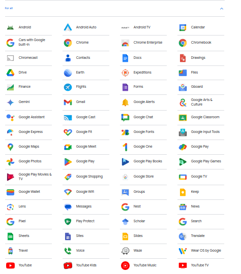

This will be a blog about Freedom, Privacy, Big Tech and the EU,among other things.
How Google is quietly dodging EU's landmark digital competition rules (DMA)
Note : This article is not about how Google might still favor its products on Google Search (see here) or restricts app developpers freedom to communicate freely to their users. (opiniated article about it)
Rather, it's a story about Google's massive advantage over smaller competitors : your google account. Precisely, how you have one single login for everything from your wallet, your e-mails, Youtube, Drive and plenty others.
 Google Services Now, think of all the competitors for EACH of them
Having this much services enables Alphabet (official name of Google) to collect vast amounts of cross-products data, both non-agregated data (ie data specifically about you) and aggregated data (trends and data at a system level).
This provides a significant competitive advantage for Google compared to competitors that have more limited data. For example, when a story is trending in Google News, google knows this is a hot subject and can predict Youtube users will be interested in it as well. A Youtube competitor like Odysee can't and his service will be less competitive because of that.
But it also apply at a personal level. Think of how seamless is it to attach your Google Drive files as a Gmail attachment.
(needs more example)
The Commission saw a problem here, in the age of Big Data, one could not hope to compete at a "fair playing ground" whith those Giants.
That's why the EU adopted the Digital Markets Act (DMA) which aims to "ensure for all businesses, contestable and fair markets in the digital sector across the Union where gatekeepers are present, to the benefit of business users and end users.
I will *not* detail all of the rules, conditions and goals of this legislation. If you haven't heard of it before, check out this FAQ, or video or for the brave, the legislation text.
Article 5 states that
2. The gatekeeper shall not do any of the following:
(a)
process, for the purpose of providing online advertising services, personal data of end users using services of third parties that make use of core platform services of the gatekeeper;
(b)
**combine personal data** from the relevant core platform service with personal data from any further core platform services or from **any other services provided by the gatekeeper or** with personal data from **third-party** services;
(c)
**cross-use personal data** from the relevant core platform service **in other services** provided separately by the gatekeeper, including other core platform services, and vice versa; and
(d)
**sign in end users to other services** of the gatekeeper in order to combine personal data,
**unless the end user** has been presented with the specific choice and **has given consent**
As you can read, the DMA solves the problem of the cross-domain Data advantage by giving the choice to the users to refuse the linkability of products. Basically, you should be able to use every major Google product independently. This will also make you less likely to be trapped in an ecosystem.
Google compliance is a "mockery of the DMA". First, the consent mechanism is aggresive. The gold standard when asking consent is assuming the user do not consent and giving him a non-invasive manner of giving consent. Here, the wording "Get Started" below "Link Google Services" imply this is mandatory. Very clearly, the "Ask me in 3 days" option should be a "refuse" option.